从奶龙到奶蛙
一支黄色生物的变异史
一个 IP 是动画公司画的、有版权、要过审的正式角色； 另一个是网友用 AI 一键生成的、没公司没策划案、却比本体更火的野生兄弟。 这中间发生了什么？
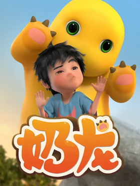
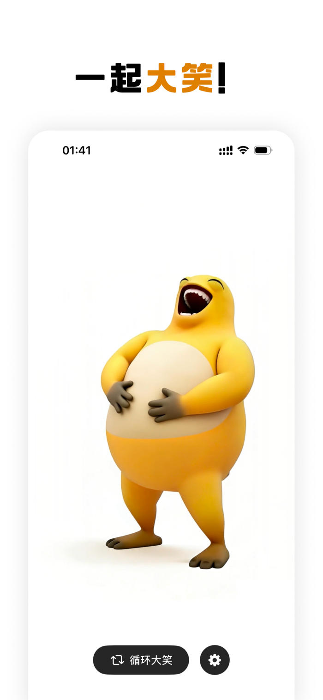
1先认识一下本尊：奶龙
奶龙是腾讯游戏旗下的正经动画 IP，长得像个胖墩墩的黄色团子，肚子里一块米白色腹肌。
有背景、有伙伴、有户口
《奶龙爆笑嘉年华》有完整剧集和番剧，还有一整个宇宙的配角：蓝不蓝、小七等。奶龙在剧里会卖汤圆、会拿放大镜找东西、会跟人聊天——一个正常的、有剧情的动画角色。
打工人的日常
它住卧室、坐教室、跑书房，认真地过着一个上班族的黄色人生。表情是温和的，眼睛是清澈的绿。整体气质可以概括为：可爱但老实。
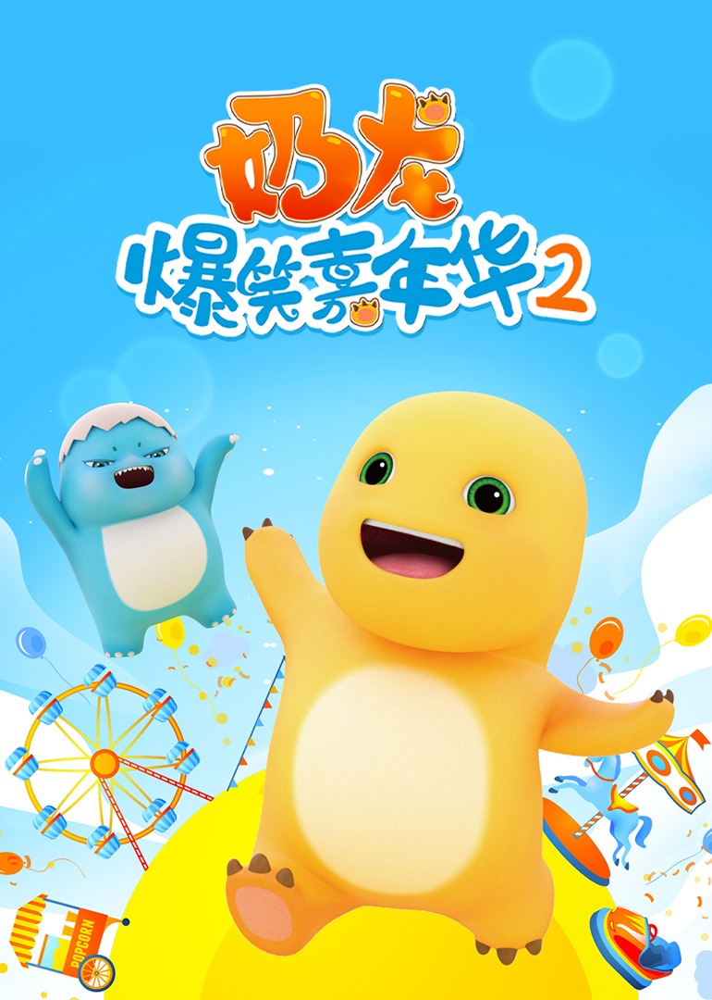
2变异是怎么发生的
简单说：一个念头 + 一个 AI 生成器 + 全网网友的接力。
有人拿 AI 3D 生成器，把奶龙丢进去改了几个参数。加上了四肢，加上了手，加上了「一个更胖的肚子」，再让它做一件事——大笑。就这一下，物种诞生了。
网友给它取名「奶蛙」，又叫「大笑奶龙」「变异奶龙」。名字一出来，它就有了户口。蛙，是因为它四肢一蹲配绿眼睛确实像蛙；奶，是因为它还是那个黄色的胖东西。
配套的「循环大笑」小程序上线，点一下就原地狂笑，停不下来。从此这个形象从一张图变成了一个动作。
奶蛙从一个表情包，迅速长成了一整个游戏宇宙：合成大奶蛙、旅行奶蛙、奶蛙快跑、奶蛙工厂，还有奶蛙居民局的 NFC 身份卡。它甚至接棒了停运的《旅行青蛙》。
奶龙的动作
找东西、卖汤圆、跟小七说话、坐在床边发呆。
奶蛙的动作
笑。就这一个动作，但可以循环一万次。
共同点
都是那个黄色胖子。奶蛙本质上是奶龙学会了「抽象」之后的样子。
3奶龙 vs 奶蛙：一份严肃的对比报告
以下内容基于严谨的观察（也就是我看了三十多张图得出的结论）。
| 对比项 | 奶龙 | 奶蛙 |
|---|---|---|
| 出身 | 动画公司出品，有合同有版权 | 网友 AI 生成，无合同无版权 |
| 手脚 | 基础款：无手臂，靠小短腿蹦跶 | 升级款：配齐双手，能叉腰、能捧腹、能挥手 |
| 身材 | 圆润可爱，标准奶爸体型 | 肚子更大，更方，更「有分量」 |
| 表情 | 温和、友善、偶尔呆萌 | 永远在笑，嘴咧到耳根，眼睛眯成缝 |
| 招牌动作 | 没有固定动作，看剧集 | 仰头狂笑，且能无限循环 |
| 社交属性 | 可可爱爱，适合做表情包 | 抽象幽默，适合做二创素材 |
| 作品数量 | 几部动画剧集 | 一堆小游戏、NFC 卡、周边 |
| 创作署名 | 能写上「腾讯游戏」 | 写不上，所以人人有份 |
| 最大区别 | 奶龙是被设计出来的 | 奶蛙是被玩出来的 |
4图集：证据在此
奶龙本体（有 IP、很守规矩）
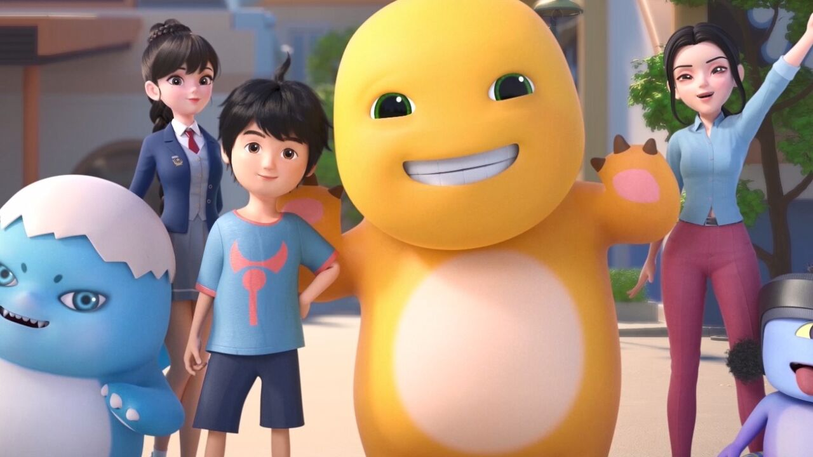
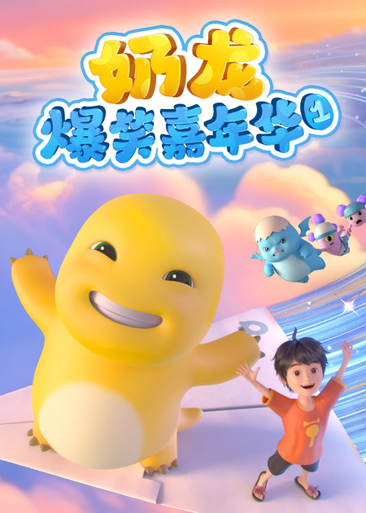
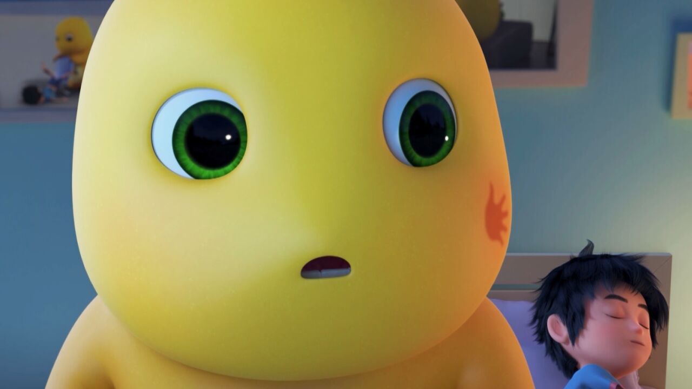
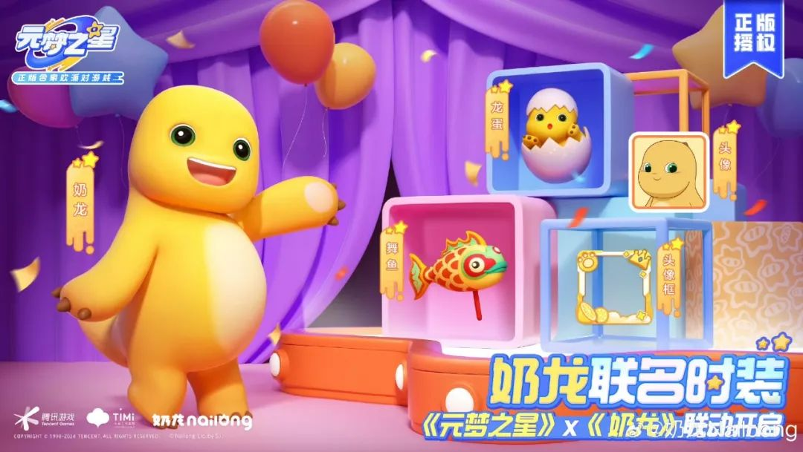
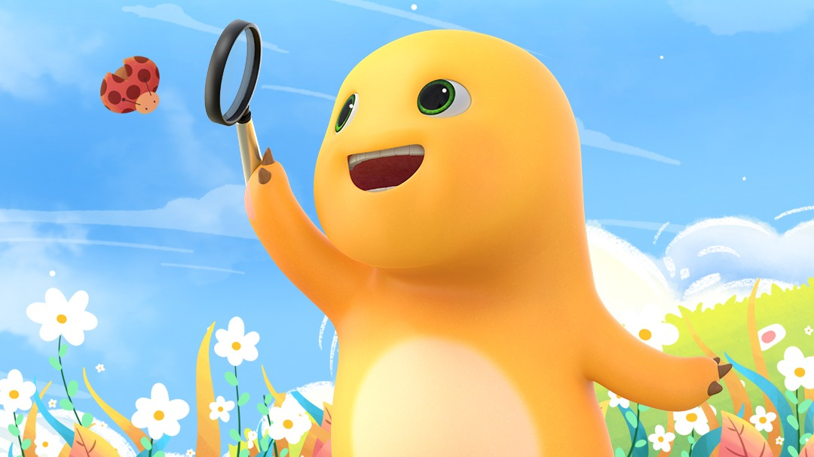
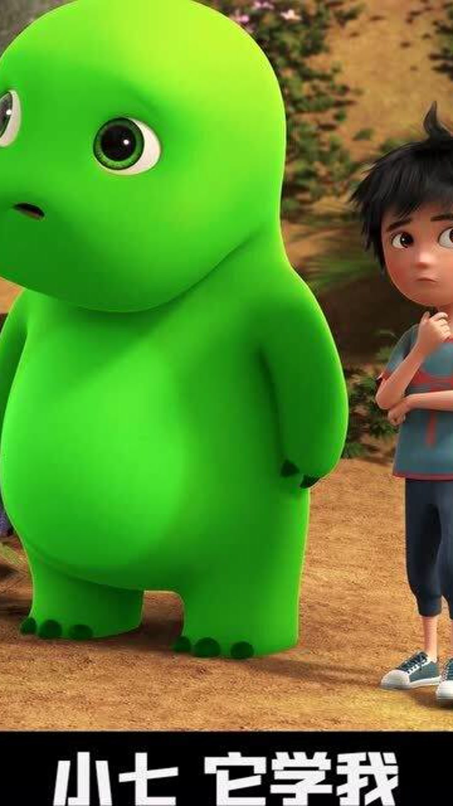
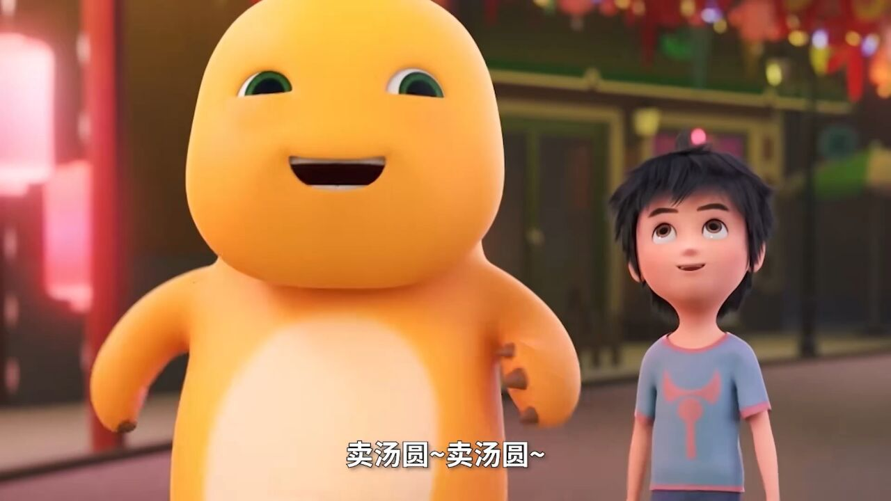
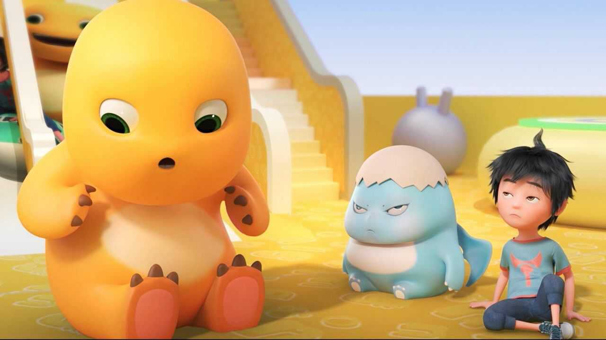
奶蛙本体（无 IP、笑得很放肆）
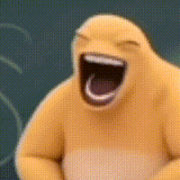
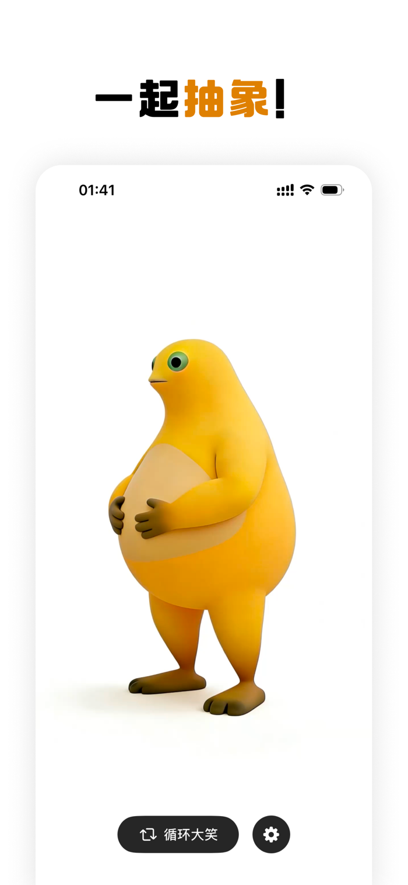
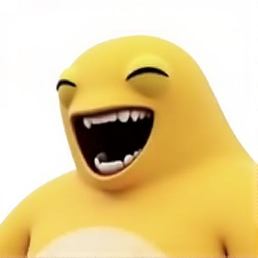
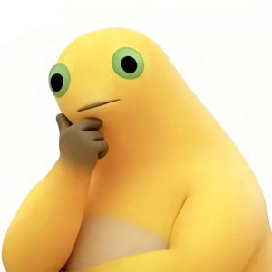
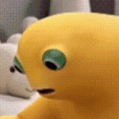
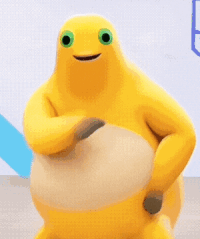
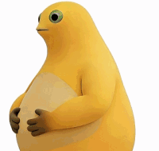
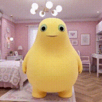
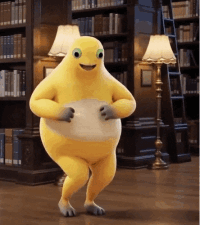
中间地带：奶龙的拟人化改造（二创前置站）
在奶龙变成奶蛙之前，还有一批「给奶龙装上手脚」的尝试。可以理解为奶蛙的爷爷辈。
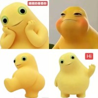
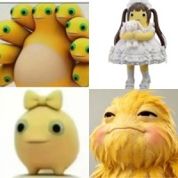

5所以，这场演变说明了什么
从角色到符号
奶龙是一个角色——有名字、有同事、有剧情，所以你能在剧集里认出它。奶蛙是一个符号——因为它只需要一个情绪就能被识别。你在群里看到一个狂笑黄色生物，0.5 秒就能知道是谁。
从被设计到被共创
官方给你一个完成品，你只能接受或者喜欢。网友给你一个半成品，你可以接着加游戏、加卡片、加周边。奶蛙的传播力，来自它留了足够多的空位给人填。
奶蛙是互联网的产物。
前者想让观众记住角色，
后者只想让所有人笑一下——
结果记住了角色的，反而被大家拿来做成了它自己。